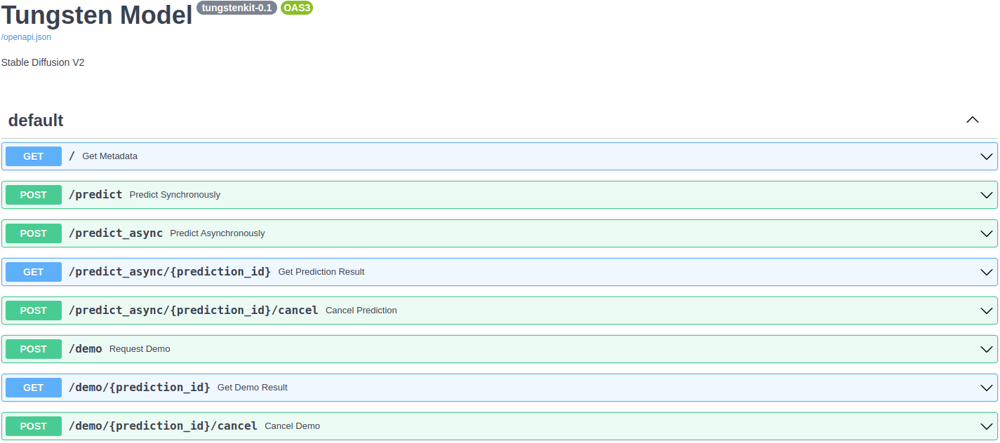

Tungsten


Tungsten is the easiest way to share and manage ML models.
🚀 Build once, use everywhere
Tungsten-built ML model containers can be used as RESTful API servers, GUI/CLI applications, serverless functions, and functions in Python scripts without any model-specific setup.
⚙️ Manage all in one place
Tungsten stores every version of ML models, data, and test specs. Also, it automatically runs tests and keeps evaluation scores up-to-date.
So, users can easily run, compare, and download ML models.
Key Features
- Build only with a few lines of Python codes
- Automatically generate a RESTful API for a model
- Provide a clean and intuitive web UI for a model
- Allow your own machines to be used to run remote predictions
- Run a prediction using CLI (comming soon)
- Run a prediction in a Python script (comming soon)
- Model, test data, and test spec versioning (comming soon)
- Keep test scores up-to-date (comming soon)
Requirements
- Python >= 3.7
- Docker
- (Optional) nvidia-docker for running GPU models locally. But you can build, push, run remotely a GPU model without it.
Installation
Take the tour
Build only with a few lines of Python codes
Tungsten does not require any complex configuration file for building. All you have to do is write a simple tungsten_model.py like below:
from typing import List, Tuple
import torch
from tungstenkit.io import BaseIO, Image
from tungstenkit.model import TungstenModel, config
class Input(BaseIO):
image: Image
class Output(BaseIO):
score: float
label: str
@config(
gpu=True,
python_packages=["torch", "torchvision"],
batch_size=64,
description="A torch model"
)
class Model(TungstenModel[Input, Output]):
def setup(self):
self.model = torch.load("./weights.pth")
def predict(self, inputs: List[Input]) -> List[Output]:
input_tensor = preprocess(inputs)
output_tensor = self.model(input_tensor)
outputs = postprocess(output_tensor)
return outputs
Automatically generate a RESTful API for a model
The model container is a standardized RESTful API server itself.
Run the container:
$ docker run -p 3000 tungsten-example:latest
INFO: Setting up the model
INFO: Getting inputs from the input queue
INFO: Starting the prediction service
INFO: Started server process [1]
INFO: Waiting for application startup.
INFO: Application startup complete.
INFO: Uvicorn running on http://0.0.0.0:3000 (Press CTRL+C to quit)
Then, visit http://localhost:3000 in a browser:

Provide a clean and intuitive web UI for a model
How it works
Define a model
Define a Tungsten model in tungsten_model.py:
from typing import List, Tuple
import torch
from tungstenkit.io import BaseIO, Image
from tungstenkit.model import TungstenModel, config
class Input(BaseIO):
image: Image
class Output(BaseIO):
score: float
label: str
@config(
gpu=True,
python_packages=["torch", "torchvision"],
batch_size=64,
description="A torch model"
)
class Model(TungstenModel[Input, Output]):
def setup(self):
self.model = torch.load("./weights.pth")
def predict(self, inputs: List[Input]) -> List[Output]:
input_tensor = preprocess(inputs)
output_tensor = self.model(input_tensor)
outputs = postprocess(output_tensor)
return outputs
Build it
Containerize the model:
Run it locally
Now you can run predictions locally:
Push it
Also, you can push the model to a Tungsten server:
# Login to a Tungsten server
tungsten login https://tungsten.example.com
# Push a model
tungsten push exampleuser/exampleproject
Run it remotely
Now you can run the model remotely in the web.
License
This project is licensed under the terms of the Apache License 2.0.